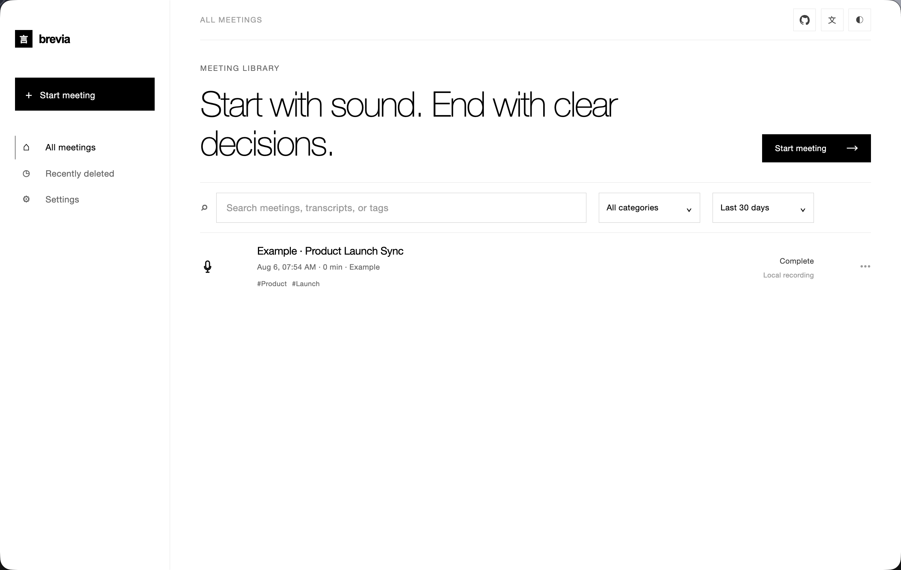

27+
Downloadable models spanning streaming ASR, offline refinement, punctuation, voice activity detection, diarization, speaker embedding, text-to-speech, and source separation.
Local-first meeting assistant
Brevia records microphone and system audio together, streams live captions, and turns the finished conversation into structured notes. All speech recognition runs locally — recordings, transcripts, and speaker profiles stay on your machine.

Capture · Understand · Retrieve
Every feature follows the same path — from the moment audio arrives to the moment you go looking for it again. The animations below run live; nothing is a video.
Open it, press record, watch the captions appear. Microphone and system audio are captured at once, so both sides of a remote call land in the same transcript. Optional live translation renders alongside the caption stream.
When a meeting ends, plug in any LLM provider and Brevia drafts the summary, key decisions, and action items together. Run a bundled model on your own machine, or connect Claude, OpenAI, or OpenRouter. Only text is sent, never audio.
Enroll a short voice sample per teammate and Brevia recognizes them by name in every future meeting — not "Speaker 1, Speaker 2," but the people they are. Recognition works across recordings, so finding what someone said last week is a single click.
A curated local model library and a handful of quieter tools round out the workflow. Mix and match by language and precision — it all runs where the audio already is.
27+
Downloadable models spanning streaming ASR, offline refinement, punctuation, voice activity detection, diarization, speaker embedding, text-to-speech, and source separation.
30+
Transcription across English, Chinese, Japanese, Korean, French, German, Spanish, Russian, Arabic, Thai, Vietnamese, and more.
ZipVoice synthesizes Chinese and English speech from enrolled reference audio; VITS voices cover German, French, Spanish, Russian, and Korean.
Bring in existing recordings for offline transcription. Spleeter splits audio into vocal and non-vocal stems for post-processing.
Transcript and notes as Markdown, TXT, JSON, SRT, DOCX, or PDF; audio as FLAC, WAV, or M4A.
Live
Speech turns into readable captions as the conversation happens.
Bilingual
See translations alongside the original captions in multilingual meetings.
Distill
Use a local or connected model to extract summaries, decisions, and action items.
Now
Streaming transcription and translation keep pace with the meeting.
How it works
Press record. Microphone and system audio stream into a single live transcript with optional translation.
At the end, an LLM drafts the summary, decisions, and action items. Speakers are named from their enrolled voiceprints.
Browse back by person or meeting. Ask "what did Alice say?" and land on the moment — everything indexed locally.
Privacy
Speech recognition, diarization, and speaker embeddings all run on-device. Recordings, transcripts, and voice profiles are never uploaded. When you opt into AI notes, only the transcript text is sent to the provider you choose — never the audio.
Grab the latest release, then open Settings → Model Library to download the models you need. Free and open source under the ISC license.
All releases on GitHubmacOS
Apple Silicon · .dmg
Windows
x64 · setup .exe
Windows may show a Microsoft Defender SmartScreen prompt on first run. Choose "More info" → "Run anyway" after verifying the download came from the official Releases page.
No. Speech recognition and speaker processing run locally. If you opt into AI notes, only the transcript text is sent to the LLM provider you configure — the audio never leaves your machine.
A bundled model runs entirely on your machine, or you can connect Claude, OpenAI, OpenRouter, or any service that speaks the OpenAI or Anthropic chat format.
Voice embeddings (a small float vector) and reference audio live in a local SQLite database and on your filesystem. Nothing leaves the device, and deleting a profile removes the associated data.
macOS on Apple Silicon and Windows on x64. On first launch, grant microphone and screen-recording permissions, then download the models you need from the Model Library.